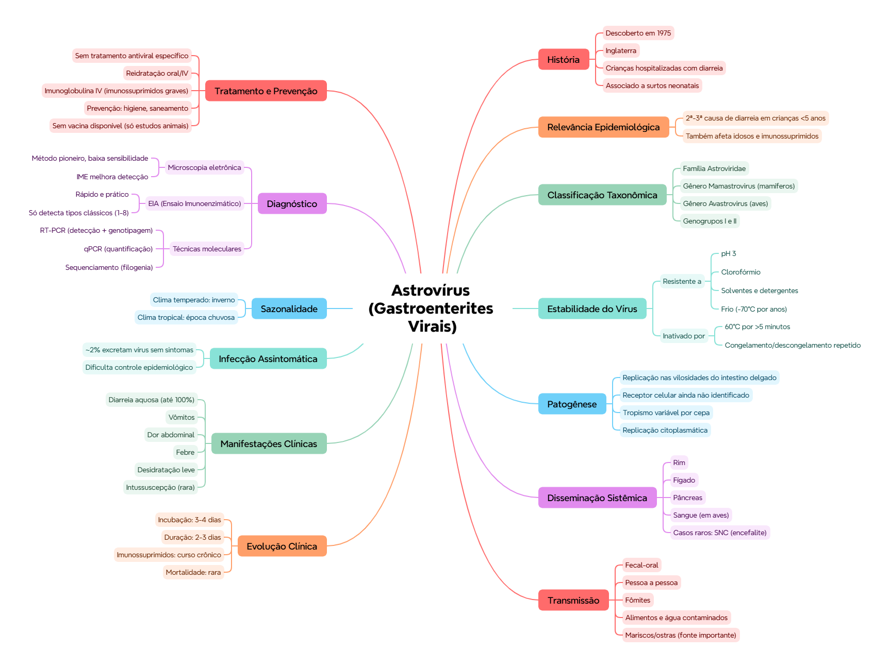

ClinicusMed · Dossiê Clinicus — Padrão de Excelência
Nv. 1
0 XP
🎯 O que você vai conseguir fazer depois desse capítulo
Classificar taxonomicamente o astrovírus e reconhecer sua descoberta histórica
Explicar a estabilidade físico-química do vírus e sua relevância prática
Descrever a patogênese, incluindo disseminação sistêmica
Reconhecer os frutos do mar (mariscos) como fonte importante de transmissão
Comparar os métodos diagnósticos disponíveis e suas limitações
Entender por que a infecção assintomática dificulta o controle
📜 Introdução e contexto histórico
Descobertos em 1975, em crianças hospitalizadas com diarreia na Inglaterra. Associados a surtos de gastroenterite em salas neonatais.
🟢 Relevância atual: é atualmente a 2ª ou 3ª causa de diarreia em crianças menores de 5 anos. Também afeta idosos e imunossuprimidos — não é uma doença exclusiva da infância.
🔬 Classificação taxonômica
Nível
Classificação
Família
Astroviridae
Gêneros
Mamastrovirus (mamíferos) e Avastrovirus (aves)
Genogrupos
I e II
📌 O que o professor cobra nesta seção: os 2 gêneros (Mamastrovirus x Avastrovirus) e a distinção clara — um infecta mamíferos, o outro aves.
🧪 Estabilidade do vírus
Resistente a pH 3, clorofórmio, solventes e detergentes
Inativado a 60°C por mais de 5 minutos
Estável a -70°C por anos
Congelamento/descongelamento repetido inativa o vírus
💭 Repare o padrão: o astrovírus é resistente a condições químicas agressivas (pH ácido, detergentes) e ao frio extremo constante, mas é vulnerável a ciclos de congelar/descongelar repetidamente — um detalhe prático relevante pra manuseio de amostras em laboratório.
🦠 Patogênese
Replicação nas células epiteliais das vilosidades do intestino delgado
Receptor celular ainda não identificado
Tropismo variável conforme a cepa
Replicação citoplasmática
🌐 Disseminação sistêmica
Diferente do que se imaginava inicialmente (doença estritamente intestinal), o astrovírus já foi detectado em:
Rim, fígado, pâncreas
Sangue (em aves)
Casos relatados no sistema nervoso central (encefalite)
🏥 Isso é clinicamente relevante especialmente em pacientes imunossuprimidos, onde infecções que normalmente ficariam restritas ao intestino podem se disseminar sistemicamente, incluindo pro SNC.
🦪 Transmissão
Via fecal-oral
Pessoa a pessoa
Fômites
Alimentos e água contaminados
Mariscos (ostras) como fonte importante
💡 A menção específica a ostras/mariscos é um diferencial em relação ao rotavírus (capítulo anterior) — vale destacar em prova, já que é um detalhe de transmissão específico do astrovírus.
⏱️ Incubação e evolução clínica
Parâmetro
Valor
Incubação
3-4 dias
Duração
2-3 dias
Em imunossuprimidos
Curso crônico
Mortalidade
Rara
🤒 Manifestações clínicas
Diarreia aquosa (até 100% dos casos)
Vômitos
Dor abdominal
Febre
Desidratação leve
Intussuscepção (rara)
💡 Diarreia aquosa em praticamente 100% dos casos é um achado quase universal — se um paciente com suspeita de astrovírus NÃO tem diarreia aquosa, vale reconsiderar o diagnóstico.
🤫 Infecção assintomática
🟢 Dado importante: cerca de 2% das pessoas infectadas excretam o vírus sem apresentar sintomas — isso aumenta a transmissão e dificulta bastante o controle epidemiológico, porque essas pessoas não sabem que estão espalhando o vírus.
Sazonalidade: clima temperado → inverno. Clima tropical → época chuvosa.
🔬 Diagnóstico — 3 abordagens
Método
Características
Microscopia eletrônica
Método pioneiro (histórico), baixa sensibilidade. IME (imunomicroscopia eletrônica) melhora a detecção
Ensaio Imunoenzimático (EIA)
Rápido e prático. Detecta os tipos clássicos (1-8). NÃO detecta tipos novos
Técnicas moleculares
RT-PCR (detecção e genotipagem), qPCR (quantificação viral), sequenciamento (estudos filogenéticos)
✅ O que você deve lembrar
Astrovírus foi descoberto em 1975, Inglaterra. Família Astroviridae, gêneros Mamastrovirus/Avastrovirus. Mariscos (ostras) são fonte importante de transmissão.
⚠️ Erro comum
Achar que o EIA detecta todos os tipos de astrovírus — ele só detecta os tipos CLÁSSICOS (1-8), não os tipos novos identificados mais recentemente.
⚡ Questão rápida
Por que a infecção assintomática por astrovírus é especialmente preocupante do ponto de vista de saúde pública?
Porque cerca de 2% das pessoas infectadas excretam o vírus sem apresentar sintomas — elas continuam transmitindo o vírus sem saber, o que aumenta a disseminação e dificulta muito as medidas de controle epidemiológico (já que não há sintomas que alertem pra necessidade de isolamento/cuidados).
🧠 Autoexplicação
Por que faz sentido que o astrovírus, originalmente considerado uma doença estritamente intestinal, tenha sido posteriormente detectado em órgãos sistêmicos (rim, fígado, pâncreas) e até no sistema nervoso central?
A descoberta de disseminação sistêmica geralmente reflete uma combinação de dois fatores: melhoria das técnicas diagnósticas (que passaram a detectar o vírus em locais onde antes não se procurava, como RT-PCR sensível em amostras de sangue/tecidos) e o reconhecimento de que, em populações vulneráveis (imunossuprimidos, por exemplo), a resposta imune que normalmente conteria a infecção dentro do intestino pode falhar, permitindo que o vírus escape da barreira intestinal e se espalhe pela corrente sanguínea até outros órgãos. Isso é um padrão comum em virologia: muitos vírus que parecem "restritos" a um sistema, quando estudados com métodos mais sensíveis ou em populações imunocomprometidas, revelam capacidade de disseminação sistêmica que não era aparente nos primeiros anos após sua descoberta — é exatamente esse processo que parece ter acontecido com o astrovírus desde sua identificação em 1975.
💊 Tratamento, prevenção e vacinas
Tratamento: autolimitado. Reidratação oral ou IV. Imunoglobulina IV em imunossuprimidos graves.
Prevenção: lavagem de mãos, higiene ambiental, saneamento básico, controle em creches/hospitais/asilos.
Vacinas:não existe vacina atualmente — estudos em modelos animais ainda em desenvolvimento.
🏥 Diferente do rotavírus (que já tem 2 vacinas estabelecidas), o astrovírus ainda não tem nenhuma vacina disponível — a prevenção depende inteiramente de medidas de higiene e saneamento.
⚠️ Onde todo mundo escorrega
Confundir Mamastrovirus (mamíferos) com Avastrovirus (aves)
Achar que o astrovírus é só uma doença intestinal — já foi detectado em rim, fígado, pâncreas e até SNC
Esquecer que mariscos (ostras) são uma fonte de transmissão específica e importante
Achar que o EIA detecta todos os tipos — só detecta os tipos clássicos (1-8)
Confundir a estabilidade do vírus (resistente a pH ácido, mas inativado por congelamento/descongelamento repetido)
📚 Se você só puder lembrar de 6 coisas
Descoberto em 1975, Inglaterra. Família Astroviridae
2ª-3ª causa de diarreia em crianças <5 anos, mas afeta idosos/imunossuprimidos também
Mariscos (ostras) são fonte importante de transmissão
~2% de infecção assintomática dificulta o controle
Sem vacina disponível atualmente
🩺 Caso Clínico Progressivo — Surto após Consumo de Ostras
Vamos acompanhar um pequeno surto de gastroenterite após um jantar em família com frutos do mar. O caso evolui em 3 níveis — clica em cada um pra ver como as coisas vão se desenrolando.
Visão geral do capítulo em formato visual — ideal pra revisão rápida antes da prova. O conteúdo completo, com explicações e exemplos, está no Guia de Estudo.

🃏 Flashcards — SM-2 real + interface Anki
O sistema guarda, no seu navegador, quais cards você já sabe bem e quais precisam voltar mais cedo — cada vez que você avalia um card, ele recalcula quando ele deve voltar.
Cartão 1 / 0Dominados: 0
PERGUNTA
RESPOSTA
✅ Banco de Questões Comentadas
10 questões, do mais básico ao mais puxado. Escolhe uma alternativa, depois clica em "Ver comentário completo" — vale a pena ler até quando você acerta, porque o comentário explica cada alternativa, não só a certa.